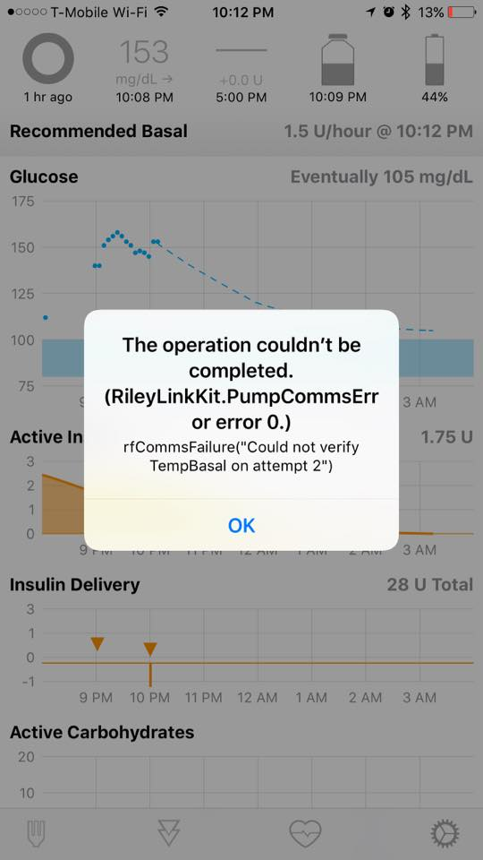
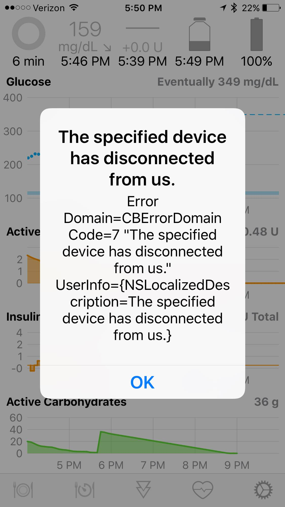

Getting a Green Loop⌁
A properly operating Loop will remain green for 5 minutes. To stay green, there are several things that Loop must do:
- Loop obtains a BG value from your CGM source, and
- Loop reads your pump history to know about insulin deliveries and recent events, and
- Loop completes a run of its calculations based on those inputs
- Loop recommends a temp basal and sends that instruction to the pump
- Pump enacts the recommended temp basal
- Loop confirms the pump enacted the recommended temp basal
If those items are successful, Loop will stay green. If something goes wrong in those steps and more than 5 minutes goes by, the Loop will turn yellow until it can solve the problem. If more than 15 minutes goes by and the problem still exists, Loop will turn red.
Troubleshooting why your Loop is failing to stay green is a matter of figuring out which of those steps is failing.
Grey to Green Loop⌁
If you are initially starting the Loop app, wait about 15-20 minutes for the Loop to turn from grey to green. There's a bit of time for Loop to pull all of those first pieces of data together, especially reading your pump history for the first time. If the Loop remains grey after 15-20 min, there are several possible causes for this. Check these most frequently missed items on new setups:
Pump
- max basal rate in Loop app is no greater than max basal rate in pump settings
- temp basal type is set to unit/hour
- remote devices is set to on and an ID is entered
- Mysentry is connected for x23 and x54 pumps
CGM
- Share app installed on the looping iPhone and open
- CGM getting current values without interruption
RileyLink
- RL is charged (it does not ship completely charged)
- RL battery needs to be securely plugged in, check those connections
If all of those items are double-checked, try closing both the Loop and Dexcom apps (double-tap home button and up-swipe to close apps). Toggle your BT on iPhone off/on. Reopen the Loop app, then reopen Dexcom app.
Yellow and Red Loops⌁
For Loopers who have already been successfully getting green loops, but suddenly find themselves with problems...we need to figure out where your loop is failing in the necessary steps to keep a green loop.
To see the latest Loop error messages, touch the yellow or red Loop Status circle on the main screen. If an error message is available it will appear in a dialog window. Much of that same message is also available from the Nightscout Loop pill.
Basically ask yourself a couple questions to start:
- Is this a CGM issue?
- Is this a pump issue?
- Is this a BT issue?
We can use a combination of the display and the error message to narrow down the possible causes of the Loop troubles.
Happy Green Loop
⌁A healthy green loop will have timestamps less than 5 minutes old below the green loop, BG reading, and reservoir level. This indicates that the Loop was run less than 5 minutes ago, fresh BGs have been coming in, temp basals have been enacted by the pump, and the pump is communicating with Loop. The screenshot below is a very happy Loop.

Old BG data (CGM issue)
⌁If your Loop turns yellow or red, easiest to start by checking the timestamps on the BG. If the BG reading is more than 5 minutes older than your iPhone time, your Loop will not be green. The screenshot below is a good example of missing BG data preventing the Loop from staying green. The pump is still communicating (reservoir reading is only 2 minutes old)...BGs appear to be the problem.


BG troubleshooting steps:
- Verify you have enabled the correct CGM Selection in Loop settings
- For G5, verify your transmitter ID is set correctly in Loop settings
- For G4, verify the Dexcom Share app is running on your phone
- Fetch Recent Glucose command in RL only works for Medtronic CGM users, by the way.
- If your local CGM is working fine on the Dexcom apps, but Loop isn't reading it:
- make sure you enter your Dexcom Share account info in the Loop settings. Loop will automatically switch to pulling from the Dexcom servers if the local reading isn't working.
- try turning Loop and Dexcom apps off, toggle BT off/on, restart Loop app, and then restart Dexcom app
Old Pump data (Pump Issue)
⌁If your pump reading is older than 5 minutes, but BGs are fine, then you will need to troubleshoot the pump communications. The screenshot below is a good example of missing pump data preventing the Loop from staying green. The CGM is still communicating (BG reading is only 2 minutes old)...but pump reservoir reading is older than 5 min.

Pump troubleshooting steps:
- Your pump battery may be low. Replace the battery...even if the percentage doesn't look low, this is a good starting point
- If you have an x23 or x54 model pump, make sure your mysentry is paired
- Have the pump and RL gotten too far away from each other? Try bringing them closer
- Try retuning the RL. Just a note though, the Loop has code embedded to automatically retunes RL when the pump comms are failing. So, manual retuning is merely more about speeding things along than being a necessary step to fixing pump comms.
- Try a Fetch Pump History. Same as retuning though, the Loop has code embedded to automatically pull pump history. Manual fetching of pump history is more about speeding things along than being a necessary step to fixing pump comms.
About rf comms between pump and RL
RF comms errors can and will happen. Just be patient, and it almost always corrects itself shortly. Yellow loops happen sometimes, they usually self-resolve. Red loops are more rare and usually a good time to start investigating possible source. Some environments will be noisy for rf comms (such as concerts, amusement parks, tech venues), and your loop may not stay green as often as usual. Just be patient. When you leave that environment, looping will go back to normal.
These types of pump error messages almost always represent short-term pump comms issues that will resolve on their own without necessary intervention, if the pump and RL are within rf-talking distance of each other.

Incorrect Pump Time (Pump Issue)
⌁And here's an interesting problem. BGs are current, but notice that the pump time is 2 hours into the future of the current iPhone time. In this case, the Loop user had manually set their pump time during travels and caused the pump time to be out of sync with Loop. Remember, do not change your pump time manually...always use the RL to set the pump time. This red loop was resolved as soon as the Looper used RL to set the pump time.

Failure to Enact Temp Basals (Pump Issue)
⌁If you see messages about "Could not verify TempBasal on attempt 2", that is likely one of just a few issues. The message indicates that Loop has BGs and pump data, has sent a recommended basal to the pump, but the pump does not appear to be enacting those basals.

- Your pump cannot be suspended. Resume insulin deliveries
- Max basal rate in Loop app cannot be greater than max basal rate in pump settings
- Temp basal type is set to unit/hour in pump
Bluetooth failures (RL or iPhone issue)
⌁Sometimes the RilleyLink and iPhone fail to communicate via BT. You need to determine if this is due to RL's problems, iPhone's problems, or just BT communications problem. There can be messages when BT fails, such as the message below, or "RileyLink Timeout" error messages.

- Has your RL been fully charged? Try charging your RL for an hour or two
- Is your lipo battery old and perhaps dying earlier in the day? Order a new battery
- Your RL battery needs to be securely plugged in, check those connections.
- Check if your RL is on and says "connected" in the status screen for bluetooth. If it says "connecting" or "disconnected", you have a BT problem with RL and iPhone.
- Make sure your iPhone's BT is turned on, and BT is not being affected by other BT systems (such as car audio)
- Check if any of the RL command buttons work...such as Send Button press. If the commands are frozen, toggle your RL power switch and turn your iPhone BT off/on.
Failure to set Insulin Curve Model (Loop settings)
⌁If you see messages about "Missing data: Glucose effects", you likely have forgotten to set your Insulin Curve Model. The message indicates that Loop is missing a component of its algorithm inputs to calculate glucose effects on predicted BGs. Return to your Loop app settings and pick an Insulin Curve.

Patience⌁
It may be that everything is working properly, but you need to wait for Loop to update.
- CGM data is retrieved every 5 minutes.
- Pump event history data is retrieved every 5 minutes.
-
Intermittent errors can cause this cycle to be 10-15 minutes or longer.
-
If all else fails after verifying the settings listed in the sections above, you can:
- Close and restart the Loop and Dexcom apps
- Toggle BT off/on
- Turn RileyLink off/on
- Replace pump battery
- Take a relaxing walk